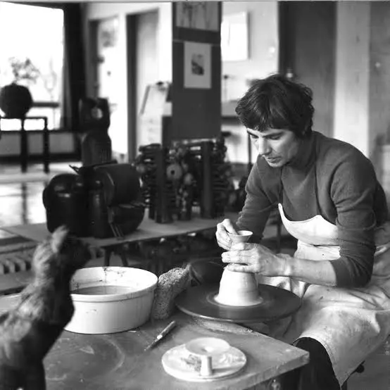

Rui Matos
nasceu em 1959 em Lisboa e construiu uma carreira marcada por esculturas em cerâmica que exploram movimento, ritmo e formas abstratas. Estudou na Escola António Arroio e no Instituto de Arte e Design, onde desenvolveu a base técnica que guiou toda a sua obra. O artista trabalhou tanto com cerâmica como com metal, embora a cerâmica seja o material que mais projetou o seu nome. As peças de Rui Matos já foram exibidas em vários países europeus e fazem parte de coleções públicas e privadas. O estilo dele busca criar objetos que parecem suspensos num estado entre equilíbrio e tensão, o que reforça o caráter experimental do seu trabalho.


Edmund de Waal
nasceu em 1964 no Reino Unido e é conhecido como um dos ceramistas contemporâneos mais influentes. Ganhou reconhecimento internacional pelas instalações compostas por conjuntos de recipientes em porcelana com foco na repetição, no silêncio visual e na relação entre luz e matéria. Estudou cerâmica desde a adolescência e mais tarde formou-se em literatura, área que impulsionou a escrita de obras premiadas. Os seus livros seguem temas como memória, história familiar e objetos como testemunhos do tempo. O trabalho dele costuma aparecer em museus importantes e reforça uma ligação íntima entre arte, narrativa e espaço.
Takuro Kuwata
nascido em 1981 no Japão, tornou-se conhecido por criar cerâmicas que desafiam a tradição. Inspirou-se inicialmente na cerâmica japonesa clássica, mas transformou esses elementos usando esmaltes explosivos, texturas intensas e cores vibrantes. O resultado é um estilo que mistura técnica ancestral com experimentação radical. Kuwata formou-se no Kyoto Saga University of Arts e mais tarde estudou com mestres ceramistas. As obras dele estão em museus como o Smithsonian e o Mingei International Museum. Muitas peças parecem estar a ponto de colapsar, o que cria um impacto visual forte e uma estética única.


Beate Kuhn
nasceu em 1927 na Alemanha e tornou-se uma figura central na cerâmica europeia do século XX. Formou-se inicialmente em música, mas mais tarde dedicou-se à cerâmica estudando com Hubert Griemert e à vida cerâmica ligada ao grupo “London Group”. A obra dela é marcada por formas orgânicas que lembram estruturas naturais, como ossos, plantas e elementos do corpo humano. Kuhn preferia criar conjuntos de peças que dialogavam entre si e exploravam ritmo, repetição e variação. O trabalho dela influenciou gerações de ceramistas e está presente em coleções importantes como o Victoria and Albert Museum.